![]()
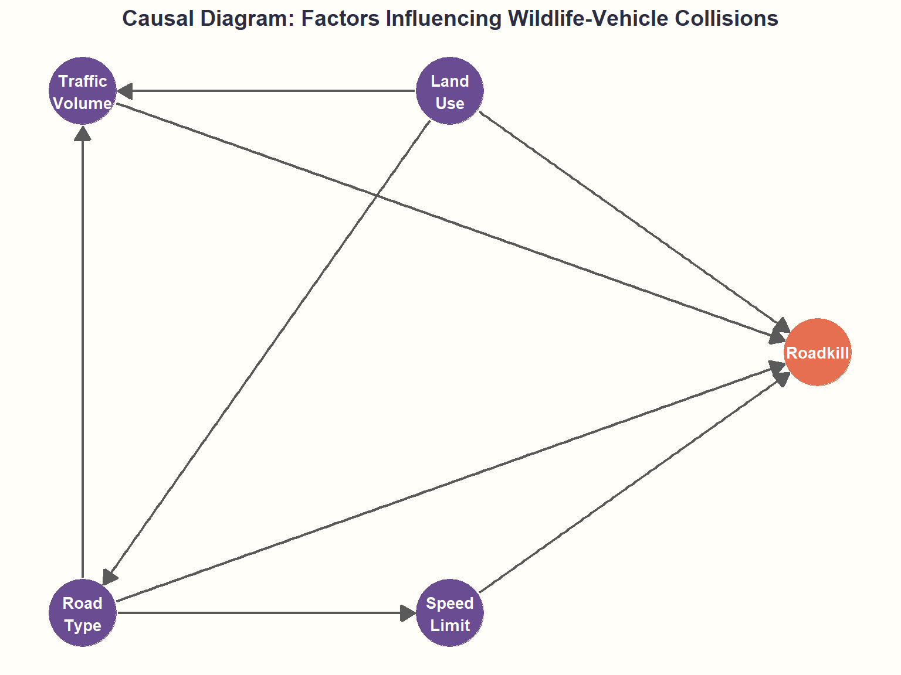
1. Introduction: Why This Matters
Wildlife-vehicle collisions threaten biodiversity and pose safety risks. Understanding which road and landscape characteristics predict roadkill hotspots enables evidence-based mitigation. We analyze ~11,000 roadkill events on 241,000 Danish road segments (2017-2019) to test whether traffic volume, forest proximity, and urban development predict collision rates.
The puzzle: Some roads experience frequent wildlife collisions while others have zero incidents. Is it just random chance or collection bias? Or are there systematic patterns we can identify and address?
If we can predict which roads are most likely to become collision hotspots, transportation planners and conservationists can install wildlife crossings, implement warning systems, or adjust speed limits in high-risk areas.
Research Question
How do traffic volume and land use characteristics affect wildlife-vehicle collisions on Danish roads?
Specifically, we investigate two processes:
- Occurrence: What makes roadkill more likely to happen at all on a given road segment?
- Intensity: Once roadkill does occur, what factors influence how many collision events happen?
The high proportion of road segments with zero observed roadkill (~83%) suggests these processes operate differently, making a hurdle model the appropriate statistical framework.
2. Building a Theory: What Causes Roadkill?
The Causal Story
Imagine you’re a deer deciding whether to cross a road. Several factors affect your collision risk:
- Traffic volume: More vehicles = more chances for collision
- Your habitat: You’re more likely to be near roads that pass through forests or parks
- Road characteristics: Wider, faster roads are harder to cross safely
- Human development: You avoid heavily urbanized areas
Visualizing Causal Relationships: The DAG
Now, let’s formalize our deer’s decision-making process with a Directed Acyclic Graph (DAG).
Key relationships:
- Traffic (AADT) directly affects roadkill probability (more vehicles → more collision opportunities)
- Land use influences wildlife presence near roads (forests/parks attract wildlife) as well as road types
- Road type is a common cause affecting traffic volume and speed limits
- Speed limit affects collision severity and driver reaction time
- We control for road type to avoid confounding when estimating traffic effects
NOTE: Without considering wildlife density and surrounding habitats, this model estimates relationships conditional on unobserved wildlife presence, which is approximated using nearby land-use rather than direct population data.
3. Hypotheses
Based on our causal theory, we make three sets of predictions:
| Hypothesis | Variable | Expected Effect | Rationale |
|---|---|---|---|
| H1: Traffic | AADT (↑) | + occurrence, + intensity | More vehicles → more collision opportunities |
| H2a: Wildlife habitat | Forest/Park (↑) | + occurrence, + intensity | Attracts wildlife near roads |
| H2b: Urban development | Residential (↑) | - occurrence, - intensity | Reduces wildlife presence |
| H3a: Road infrastructure | Minor roads (vs Major baseline) | - occurrence, - intensity | Lower speeds, fewer lanes than major roads |
| H3b: Speed | Speed limit (↑) | + occurrence, + intensity | Reduced reaction time, higher mortality |
Note: Count component effects control for road segment length by including log(length) as a predictor.
4. Data & Methods
Data Sources
| Dataset | Source | Variables | Coverage |
|---|---|---|---|
| Roadkill observations | Global Roadkill Database (Grilo et al. 2025) | GPS coordinates, species | 2017-2019 |
| Road network | OpenStreetMap (OpenStreetMap contributors 2024) | Geometry, type, speed limits | Denmark |
| Traffic counts | Danish Road Directorate (Danish Road Directorate 2017--2019) | AADT (vehicles/day) | Monitoring stations |
| Land use | OpenStreetMap (OpenStreetMap contributors 2024) | Forest, farmland, residential, parks | 500m buffers |
Technical Setup: tidyverse, sf, terra, here, pscl, yaml, patchwork, dagitty, ggdag
Code
library(tidyverse)
library(sf)
library(terra)
library(here)
library(pscl)
library(yaml)
library(patchwork)
# Load configuration
config <- read_yaml(here("posts/eds222-final/config.yml"))
set.seed(config$seed)
CRS_M <- config$crs # EPSG:25832, Denmark ETRS89 / UTM zone 32N
# Denmark bounding box (WGS84)
dk_bbox_wgs84 <- st_bbox(c(
xmin = config$bbox_xmin,
ymin = config$bbox_ymin,
xmax = config$bbox_xmax,
ymax = config$bbox_ymax
), crs = config$bbox_crs)
# Transform to projected CRS
dk_bbox_proj <- st_transform(st_as_sfc(dk_bbox_wgs84), CRS_M) %>%
st_bbox()Data Processing Pipeline
Load Roadkill Observations
Roadkill observations are GPS point locations filtered to Denmark and the study period (2017-2019), then transformed to a projected coordinate system (EPSG:25832) for analysis.
Code
# Load roadkill CSV
road_kill_dk <- read_csv(here(config$roadkill_csv_path)) %>%
filter(
country == "Denmark",
year >= 2017, year <= 2019
) %>%
drop_na(decimalLongitude, decimalLatitude) %>%
st_as_sf(coords = c("decimalLongitude", "decimalLatitude"), crs = 4326) %>%
st_transform(CRS_M) %>%
st_crop(dk_bbox_proj)
- Roadkill observations: 16,237
- Time period: 2017-2019
- Coordinate system: ETRS89 / UTM zone 32N
Load Road Network
Code
# Define cache path for roads data
roads_cache <- here(config$roads_cached_path)
if (file.exists(roads_cache)) {
cat("Loading roads from cache...\n")
roads_raw <- readRDS(roads_cache)
} else {
cat("Cache not found. Loading and processing roads (one-time setup)...\n")
# Load shapefile
roads_raw <- st_read(here(config$roads_shp_path), quiet = TRUE) %>%
st_transform(CRS_M) %>%
st_crop(dk_bbox_proj)
# Save to cache
cat("Saving roads to cache for future runs...\n")
saveRDS(roads_raw, roads_cache)
cat("Cache saved:", roads_cache, "\n")
}Road segments loaded: 1,327,815
Load Traffic Data
Traffic counts represent Annual Average Daily Traffic (AADT) from monitoring stations, averaged across 2017-2019.
Code
# Define cache path for traffic data
traffic_cache <- here(config$traffic_cached_path)
if (file.exists(traffic_cache)) {
cat("Loading traffic data from cache...\n")
traffic_raw <- readRDS(traffic_cache)
} else {
cat("Cache not found. Loading and processing traffic (one-time setup)...\n")
# Load shapefile
traffic_raw <- st_read(here(config$traffic_shp_path), quiet = TRUE) %>%
st_transform(CRS_M) %>%
st_crop(dk_bbox_proj) %>%
filter(AAR >= 2017, AAR <= 2019) %>%
# Average AADT across years for each station
group_by(geometry) %>%
summarise(
AADT = mean(AADT, na.rm = TRUE),
AAR = "2017-2019",
.groups = "drop"
) %>%
st_as_sf()
# Save to cache
cat("Saving traffic to cache for future runs...\n")
saveRDS(traffic_raw, traffic_cache)
cat("Cache saved:", traffic_cache, "\n")
}Traffic monitoring stations: 3,000
Load Land Use Data
Land use polygons classify areas as forest, farmland, residential, parks, etc.
Land use polygons: 587,311
Top land use classes:
| fclass | n |
|---|---|
| farmland | 149854 |
| forest | 141814 |
| farmyard | 84400 |
| meadow | 72662 |
| scrub | 55374 |
| grass | 40029 |
| residential | 20427 |
| heath | 5948 |
| park | 5540 |
| industrial | 3310 |
Computational Note: These shapefiles are large (millions of features); we cache the processed/projected versions to avoid reloading and processing during every run. First runs take ~5-10 minutes each; cached runs take seconds.
Filter to Motorized Roads
We restrict analysis to roads accessible by motor vehicles, excluding pedestrian paths and cycleways and other places where wildlife-vehicle collisions cannot occur.
- Motorized road segments: 322,776
- Total road length: 97,822 km
- Mean segment length: 0.3 km
Match Traffic to Road Segments
Traffic monitoring stations are point locations. Since there are far more roads than monitoring stations, I assigned each road segment with the AADT from its nearest station, applying a distance threshold. This means we only assign traffic data to roads within ~3.7 km of a monitoring station, avoiding matches to stations that are unreasonably far away. This balances coverage (75% of roads get traffic data) with accuracy (avoiding spurious long-distance matches).
Code
# Apply configured threshold
threshold_percentile <- config$distance_threshold_percentile
dist_threshold <- quantile(as.numeric(distances), threshold_percentile)
# Merge traffic data with roads
roads_traf <- car_roads %>%
mutate(
nn_dist_m = as.numeric(distances),
AADT = if_else(nn_dist_m <= dist_threshold,
traffic_raw$AADT[nearest_idx],
NA_real_)
)
- Distance threshold: 3,699 m (75th percentile)
- Roads with traffic data: 242,082 (75%)
- AADT range: 0 - 59,632 vehicles/day
Note: Analysis is limited to Denmark’s monitored road network (major highways and urban roads). Remote rural roads are likely not included.
Extract Land Use Around Roads
We calculate the percentage of forest, farmland, residential, and park land use within 500m buffers around each road segment. This distance approximates wildlife movement ranges and habitat edge effects.
Mean land use composition within 500m:
- Forest: 11.2%
- Farmland: 31.9%
- Residential: 44.5%
- Parks: 4.6%
Aggregate Roadkill by Road Segment
Each roadkill point is matched to its nearest road segment using spatial join.
- Road segments with roadkill: 10,095
Create Final Analysis Dataset
We merge all data sources and apply transformations required for modeling: log-transform traffic and road length, classify road types, and assign missing speed limits.
Dataset summary:
| Metric | Value |
|---|---|
| Road segments | 241,765 |
| Segments with roadkill | 6,850 (2.8%) |
| Zero-inflation rate | 97.2% |
| Total roadkill events | 10,834 |
| Mean roadkill per segment | 0.045 |
| Overdispersion (Var/Mean) | 2.71 |
Key observations: High zero-inflation (97.2%) and overdispersion (Var/Mean = 2.71) justify using a hurdle model with negative binomial distribution.
5. Exploratory Data Analysis
Before modeling, we visualize how our predictors distribute and relate to roadkill occurrence:
Code
# Distribution plots
p_aadt_dist <- ggplot(model_data, aes(x = AADT)) +
geom_histogram(fill = primary_color, color = "white", alpha = 0.8, bins = 50) +
scale_x_log10(labels = scales::comma) +
labs(title = "Distribution of Traffic Volume", x = "AADT (vehicles/day, log scale)", y = "Count of Road Segments") +
theme_cohesive()
p_length_dist <- ggplot(model_data, aes(x = len_km)) +
geom_histogram(fill = primary_color, color = "white", alpha = 0.8, bins = 50) +
scale_x_log10() +
labs(title = "Distribution of Road Segment Length", x = "Length (km, log scale)", y = "Count of Road Segments") +
theme_cohesive()
p_speed_dist <- ggplot(model_data, aes(x = speed_limit)) +
geom_histogram(fill = primary_color, color = "white", alpha = 0.8, binwidth = 10) +
labs(title = "Distribution of Speed Limits", x = "Speed Limit (km/h)", y = "Count of Road Segments") +
theme_cohesive()
# Land use distributions
landuse_long <- model_data %>%
dplyr::select(pct_forest, pct_farmland, pct_residential, pct_park) %>%
pivot_longer(everything(), names_to = "landuse_type", values_to = "percentage") %>%
mutate(landuse_type = str_replace(landuse_type, "pct_", "") %>% str_to_title())
p_landuse_dist <- ggplot(landuse_long, aes(x = percentage, fill = landuse_type)) +
geom_histogram(alpha = 0.8, bins = 30) +
facet_wrap(~landuse_type, scales = "free_y") +
scale_fill_manual(values = c("Forest" = backup_color, "Farmland" = accent_color, "Residential" = primary_color, "Park" = neutral_color)) +
labs(title = "Distribution of Land Use Types (within 500m buffers)", x = "Percentage of Buffer Area", y = "Count of Road Segments") +
theme_cohesive() +
theme(legend.position = "none")
# Road type distribution
p_roadtype <- model_data %>%
count(road_type) %>%
ggplot(aes(x = reorder(road_type, n), y = n, fill = road_type)) +
geom_col(alpha = 0.8, show.legend = FALSE) +
scale_fill_manual(values = c("Major" = accent_color, "Minor" = primary_color, "Other" = neutral_color)) +
coord_flip() +
labs(title = "Distribution of Road Types", x = "Road Type", y = "Count of Road Segments") +
theme_cohesive()
# Combine
(p_aadt_dist + p_length_dist) / (p_speed_dist + p_roadtype) / p_landuse_dist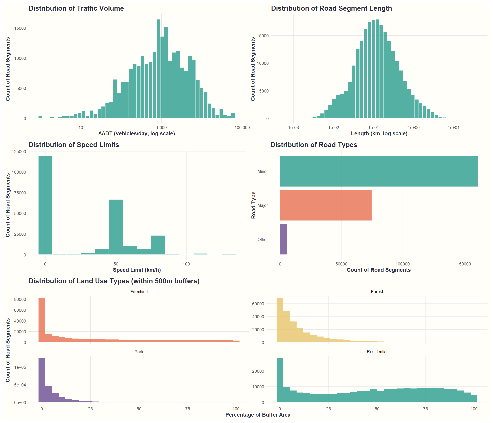
Key patterns at a glance: - Traffic and forest coverage show strong positive relationships with roadkill - Residential development shows negative relationship (fewer wildlife) - Major roads have much higher collision rates than minor roads - Speed limits cluster into two groups (urban vs highway)
Detailed Exploration by Predictor
Code
ggplot(model_data, aes(x = AADT)) +
geom_histogram(fill = primary_color, color = "white", alpha = 0.8, bins = 50) +
scale_x_log10(labels = scales::comma) +
labs(title = "Distribution", x = "AADT (vehicles/day, log scale)", y = "Count") +
theme_cohesive()
What we see: Most road segments experience moderate-to-high traffic (100-10,000 vehicles/day). Few segments have very low (<10) or very high (>10,000) traffic volumes.
Code
ggplot(model_data, aes(x = AADT, y = as.numeric(roadkill_count > 0))) +
stat_summary_bin(fun = mean, geom = "point", bins = 20, color = primary_color, size = 3) +
stat_summary_bin(fun = mean, geom = "line", bins = 20, color = primary_color, linewidth = 1) +
scale_x_log10(labels = scales::comma) +
scale_y_continuous(labels = scales::percent, limits = c(0, NA)) +
labs(title = "Relationship to Roadkill", x = "AADT (vehicles/day, log scale)", y = "% with Roadkill") +
theme_cohesive()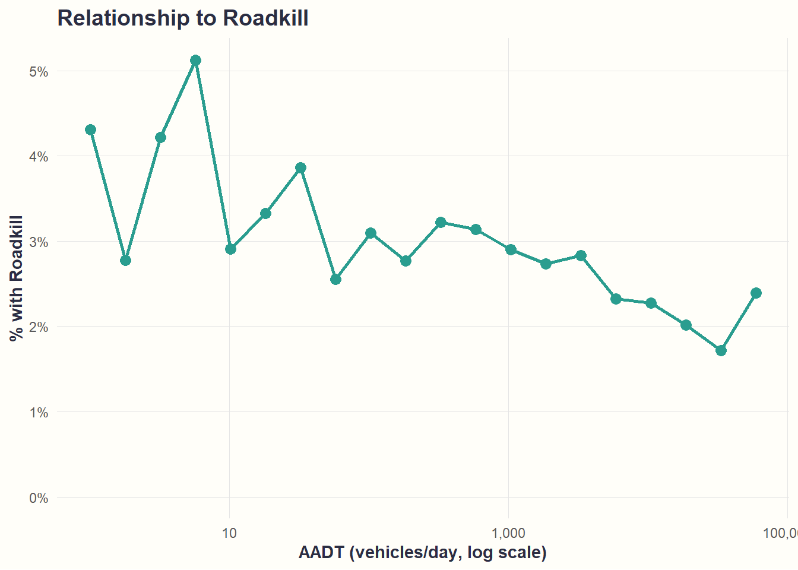
What we see: Higher traffic corresponds to slightly higher roadkill rates. Pattern is clearest in the 100-10,000 range where data are concentrated; noisier at extremes.
Code
ggplot(model_data, aes(x = pct_forest)) +
geom_histogram(fill = backup_color, color = "white", alpha = 0.8, bins = 30) +
labs(title = "Distribution", x = "% Forest within 500m", y = "Count") +
theme_cohesive()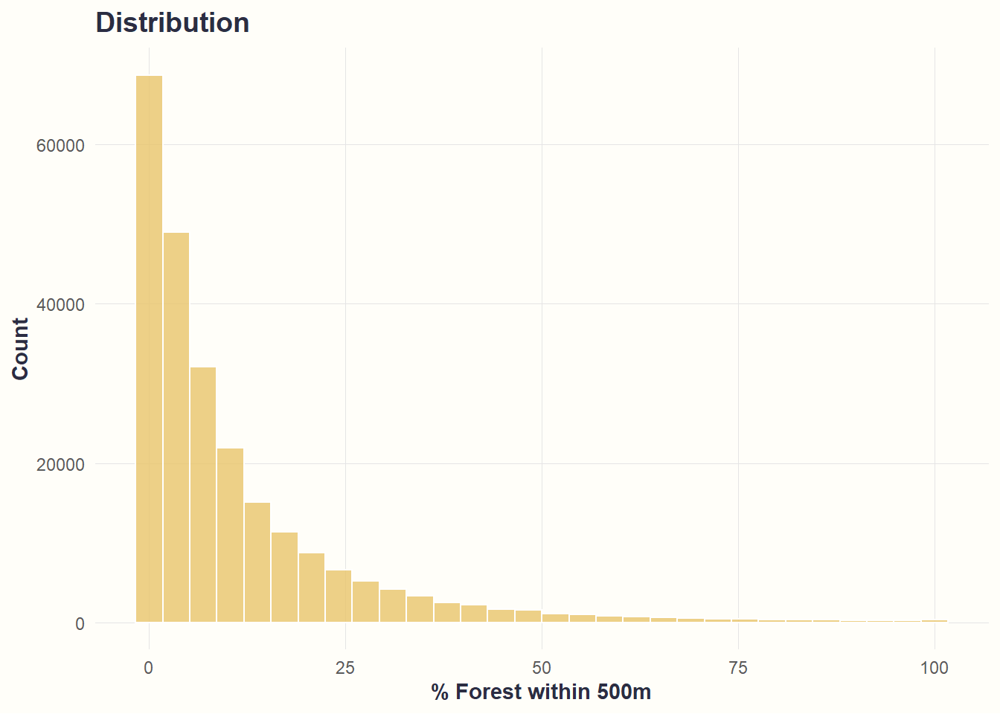
What we see: Most road segments have 0-20% forest nearby, very few have >50%.
Code
ggplot(model_data, aes(x = pct_forest, y = as.numeric(roadkill_count > 0))) +
stat_summary_bin(fun = mean, geom = "point", bins = 20, color = backup_color, size = 3) +
stat_summary_bin(fun = mean, geom = "line", bins = 20, color = backup_color, linewidth = 1) +
scale_y_continuous(labels = scales::percent, limits = c(0, NA)) +
labs(title = "Relationship to Roadkill", x = "% Forest within 500m", y = "% with Roadkill") +
theme_cohesive()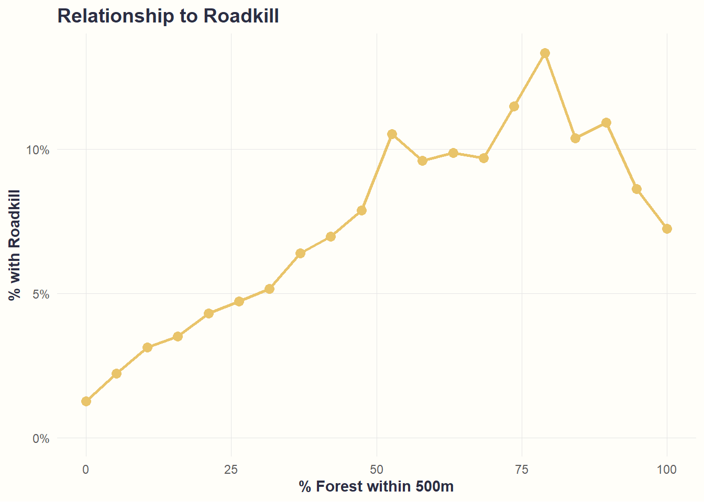
What we see: Strongest predictor! Roadkill probability jumps from ~2% to ~20% as forest increases. Supports H2a.
Code
ggplot(model_data, aes(x = pct_residential)) +
geom_histogram(fill = primary_color, color = "white", alpha = 0.8, bins = 30) +
labs(title = "Distribution", x = "% Residential within 500m", y = "Count") +
theme_cohesive()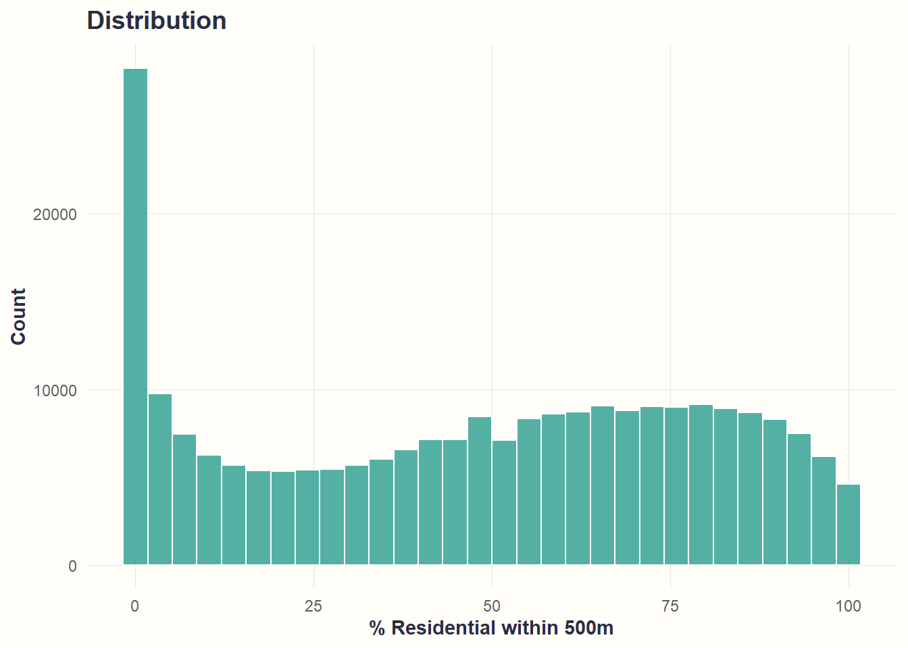
What we see: Most roads have low residential coverage, but substantial numbers exist across the full range.
Code
ggplot(model_data, aes(x = pct_residential, y = as.numeric(roadkill_count > 0))) +
stat_summary_bin(fun = mean, geom = "point", bins = 20, color = primary_color, size = 3) +
stat_summary_bin(fun = mean, geom = "line", bins = 20, color = primary_color, linewidth = 1) +
scale_y_continuous(labels = scales::percent, limits = c(0, NA)) +
labs(title = "Relationship to Roadkill", x = "% Residential within 500m", y = "% with Roadkill") +
theme_cohesive()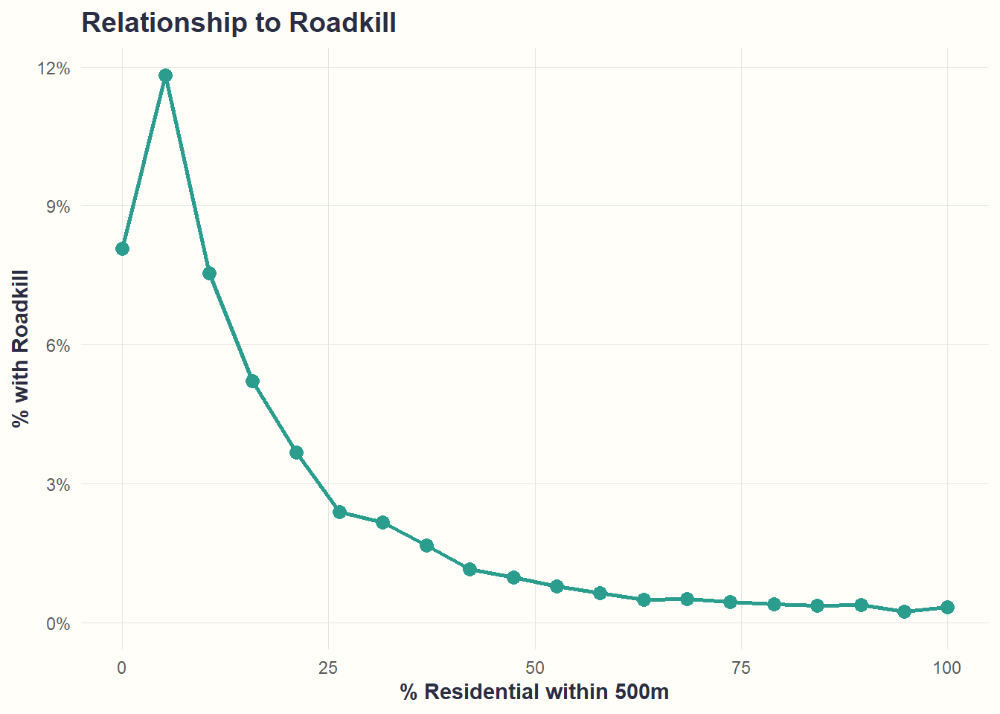
What we see: Strong negative relationship - roadkill probability drops from ~10% to <1% as residential development increases. Supports H2b.
Code
model_data %>%
count(road_type) %>%
ggplot(aes(x = reorder(road_type, n), y = n, fill = road_type)) +
geom_col(alpha = 0.8, show.legend = FALSE) +
scale_fill_manual(values = c("Major" = accent_color, "Minor" = primary_color, "Other" = neutral_color)) +
scale_y_continuous(labels = scales::comma) +
coord_flip() +
labs(title = "Distribution", x = "Road Type", y = "Count") +
theme_cohesive()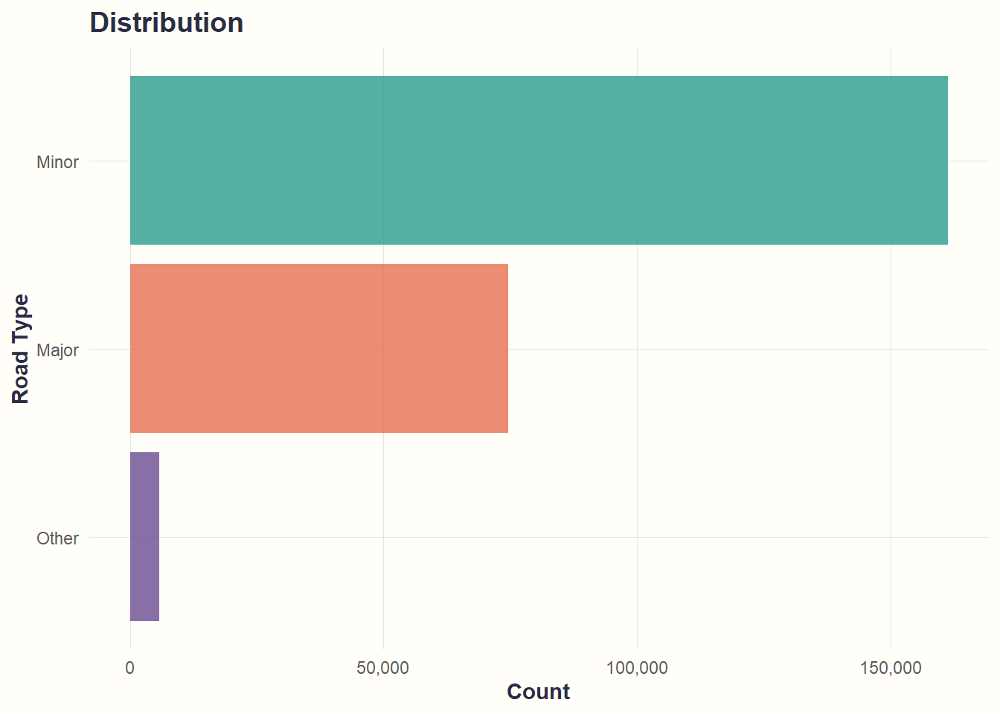
What we see: Network dominated by minor roads (~180k), with major roads (~60k) less common.
Code
model_data %>%
group_by(road_type) %>%
summarise(roadkill_prob = mean(roadkill_count > 0), .groups = "drop") %>%
ggplot(aes(x = reorder(road_type, roadkill_prob), y = roadkill_prob, fill = road_type)) +
geom_col(alpha = 0.8, show.legend = FALSE) +
scale_fill_manual(values = c("Major" = accent_color, "Minor" = primary_color, "Other" = neutral_color)) +
scale_y_continuous(labels = scales::percent) +
coord_flip() +
labs(title = "Relationship to Roadkill", x = "Road Type", y = "% with Roadkill") +
theme_cohesive()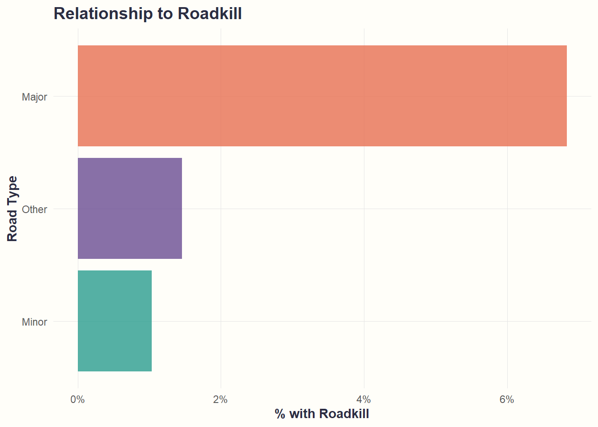
What we see: Major roads have 7x higher roadkill rates (~7%) than Minor roads (~1%). Supports H3a.
Code
ggplot(model_data, aes(x = speed_limit)) +
geom_histogram(fill = accent_color, color = "white", alpha = 0.8, binwidth = 10) +
labs(title = "Distribution", x = "Speed Limit (km/h)", y = "Count") +
theme_cohesive()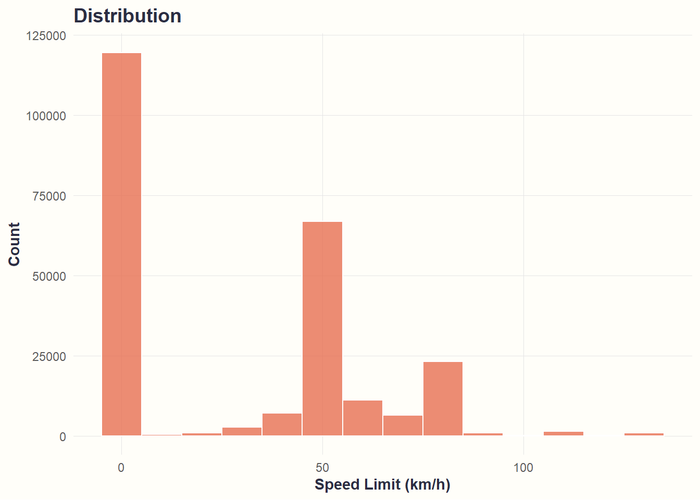
What we see: Three clusters - low-speed zones (~0 km/h, likely missing data), moderate speeds (~50 km/h), and highways (~80 km/h).
Code
model_data %>%
mutate(speed_bin = cut(speed_limit, breaks = c(0, 50, 70, 90, 110, 140))) %>%
group_by(speed_bin) %>%
summarise(roadkill_prob = mean(roadkill_count > 0), n = n(), .groups = "drop") %>%
filter(n > 100) %>%
ggplot(aes(x = speed_bin, y = roadkill_prob)) +
geom_col(fill = accent_color, alpha = 0.8) +
scale_y_continuous(labels = scales::percent) +
labs(title = "Relationship to Roadkill", x = "Speed Limit (km/h)", y = "% with Roadkill") +
theme_cohesive() +
theme(axis.text.x = element_text(angle = 45, hjust = 1))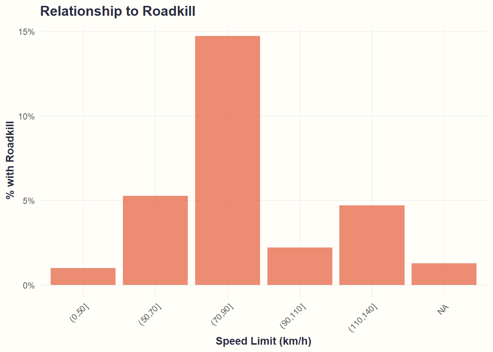
What we see: Roadkill rates peak at moderate speeds (70-90 km/h, ~15%), then decline at higher speeds. Non-linear pattern suggests H3b needs refinement.
These exploratory patterns support some hypotheses (forest, road type) but challenge others (traffic, speed). The hurdle model will quantify these effects while controlling for confounding.
6. Statistical Model: The Hurdle Approach
Why a Hurdle Model?
Traditional count models (Poisson, negative binomial) underestimate zeros. Our data exhibits:
- Excess zeros: 97.2% of segments have no roadkill
- Overdispersion: Variance (0.12) >> Mean (0.045)
A hurdle model separates two processes:
- Binary hurdle (logistic): Does roadkill occur at all?
- Count component (negative binomial): How many events, given occurrence?
Model Specification
Part 1: Zero hurdle (Binary component)
Models whether any roadkill occurs on a road segment:
\[ \begin{aligned} Z_i &\sim \text{Binomial}(p_i) \\ \text{logit}(p_i) &= \alpha_0 + \alpha_1 \log(\text{AADT}_i) + \alpha_2 \text{Minor}_i + \alpha_4 \text{Speed}_i \\ &\quad + \alpha_5 \text{Forest}_i + \alpha_6 \text{Farm}_i + \alpha_7 \text{Residential}_i + \alpha_8 \text{Park}_i \end{aligned} \]
where \(Z_i = 1\) if roadkill occurs, \(p_i\) is the probability of observing any roadkill, and \(\text{Minor}_i\) is an indicator for road type (reference: Major roads).
Part 2: Count component (Positive counts only)
Models the number of roadkill events, conditional on at least one event occurring:
\[ \begin{aligned} Y_i | Z_i = 1 &\sim \text{Negative Binomial}(\mu_i, \theta) \\ \log(\mu_i) &= \beta_0 + \beta_1 \log(\text{AADT}_i) + \beta_2 \text{Minor}_i + \beta_4 \text{Speed}_i \\ &\quad + \beta_5 \text{Forest}_i + \beta_6 \text{Farm}_i + \beta_7 \text{Residential}_i + \beta_8 \text{Park}_i + \beta_9 \log(\text{Length}_i) \end{aligned} \]
where \(\theta\) is the dispersion parameter.
Model Validation: Simulation Test
Before applying to real data, we verify the model recovers known parameters from simulated data.
Code
set.seed(42)
n_sim <- 10000
x_sim <- rnorm(n_sim, mean = 10, sd = 2)
# True parameters for hurdle model
beta0_zero <- -0.5 # Zero component intercept
beta1_zero <- 0.3 # Zero component slope
beta0_count <- 0.5 # Count component intercept
beta1_count <- 0.2 # Count component slope
theta <- 1.5 # Dispersion parameter
# Generate binary outcomes (does roadkill occur?)
logit_prob_nonzero <- beta0_zero + beta1_zero * x_sim
prob_nonzero <- plogis(logit_prob_nonzero)
z_sim <- rbinom(n_sim, size = 1, prob = prob_nonzero)
# Generate positive counts for non-zero cases (vectorized!)
mu_count <- exp(beta0_count + beta1_count * x_sim)
y_counts_raw <- rnbinom(n_sim, mu = mu_count, size = theta)
y_counts_truncated <- pmax(y_counts_raw, 1) # Truncate at 1
# Apply hurdle - observations that didn't pass hurdle get 0
y_sim <- z_sim * y_counts_truncated
sim_data <- tibble(x = x_sim, y = y_sim)Simulated data characteristics:
- Zero rate: 9%
- Mean count (all): 12.496
- Mean count (non-zero only): 13.727
Code
# Fit hurdle model to simulated data
sim_hurdle <- hurdle(y ~ x, data = sim_data, dist = "negbin")
# Extract estimated parameters
sim_coefs <- coef(sim_hurdle)Parameter recovery check
Code
zero_intercept <- sim_coefs["zero_(Intercept)"]
zero_slope <- sim_coefs["zero_x"]
count_intercept <- sim_coefs["count_(Intercept)"]
count_slope <- sim_coefs["count_x"]
recovery_table <- tibble(
Component = c("Zero", "Zero", "Count", "Count"),
Parameter = c("Intercept", "Slope", "Intercept", "Slope"),
`True Value` = c(beta0_zero, beta1_zero, beta0_count, beta1_count),
Estimated = round(c(zero_intercept, zero_slope, count_intercept, count_slope), 3),
Difference = round(c(zero_intercept, zero_slope, count_intercept, count_slope) -
c(beta0_zero, beta1_zero, beta0_count, beta1_count), 3)
) %>%
mutate(Recovered = ifelse(abs(Difference) < 0.2, "✓", "✗"))
knitr::kable(recovery_table, caption = "Parameter Recovery Check: Simulated Data", digits = 3)| Component | Parameter | True Value | Estimated | Difference | Recovered |
|---|---|---|---|---|---|
| Zero | Intercept | -0.5 | -0.342 | 0.158 | ✓ |
| Zero | Slope | 0.3 | 0.279 | -0.021 | ✓ |
| Count | Intercept | 0.5 | 0.312 | -0.188 | ✓ |
| Count | Slope | 0.2 | 0.215 | 0.015 | ✓ |
Conclusion: Model successfully recovers known parameters (differences < 0.2). We can apply it to real data with confidence.
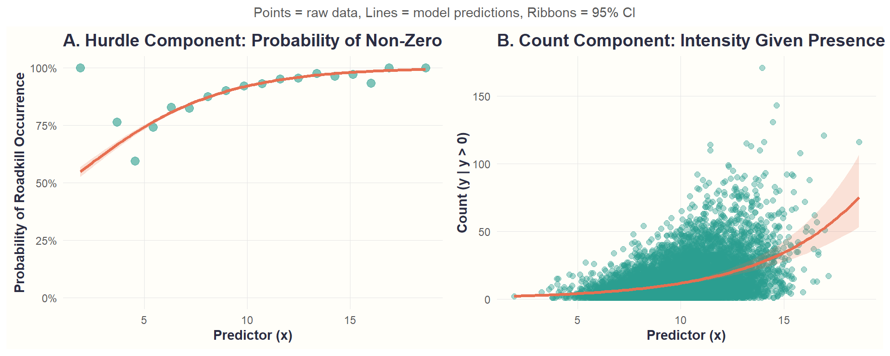
Key Takeaway: The simulation proves our modeling framework works—when we feed the hurdle model data generated from known parameters, it successfully recovers those parameters.
7. Results
Fit Model to Real Data
Code
# Fit hurdle model with negative binomial count distribution
hurdle_model <- hurdle(
roadkill_count ~ log_AADT + road_type + speed_limit +
pct_forest + pct_farmland + pct_residential + pct_park + log(len_km) |
log_AADT + road_type + speed_limit +
pct_forest + pct_farmland + pct_residential + pct_park,
data = model_data,
dist = config$model_distribution,
zero.dist = config$model_zero_dist
)Model Diagnostics
- Log-Likelihood: -3.06357^{4}
- AIC: 6.13113^{4}
- BIC: 6.15193^{4}
Model Coefficients
| Parameter | Estimate | SE | Z_value | P_value | Sig |
|---|---|---|---|---|---|
| count_(Intercept) | -1.6019 | 0.2571 | -6.23 | 0.00000 | *** |
| count_log_AADT | 0.0198 | 0.0138 | 1.44 | 0.14970 | |
| count_road_typeMinor | -0.8416 | 0.0858 | -9.80 | 0.00000 | *** |
| count_road_typeOther | -1.5388 | 0.4381 | -3.51 | 0.00044 | *** |
| count_speed_limit | 0.0082 | 0.0011 | 7.72 | 0.00000 | *** |
| count_pct_forest | 0.0107 | 0.0023 | 4.62 | 0.00000 | *** |
| count_pct_farmland | -0.0030 | 0.0022 | -1.42 | 0.15671 | |
| count_pct_residential | 0.0016 | 0.0026 | 0.59 | 0.55277 | |
| count_pct_park | 0.0010 | 0.0038 | 0.27 | 0.78803 | |
| count_log(len_km) | 0.7850 | 0.0290 | 27.06 | 0.00000 | *** |
| zero_(Intercept) | -4.2640 | 0.1144 | -37.29 | 0.00000 | *** |
| zero_log_AADT | 0.0032 | 0.0073 | 0.44 | 0.66214 | |
| zero_road_typeMinor | -1.2231 | 0.0379 | -32.24 | 0.00000 | *** |
| zero_road_typeOther | -1.5628 | 0.1124 | -13.90 | 0.00000 | *** |
| zero_speed_limit | 0.0064 | 0.0005 | 12.83 | 0.00000 | *** |
| zero_pct_forest | 0.0311 | 0.0011 | 28.17 | 0.00000 | *** |
| zero_pct_farmland | 0.0214 | 0.0010 | 21.68 | 0.00000 | *** |
| zero_pct_residential | -0.0137 | 0.0012 | -11.49 | 0.00000 | *** |
| zero_pct_park | 0.0009 | 0.0021 | 0.42 | 0.67786 |
Interpretation guide:
- Zero component: Log-odds coefficients. Positive values increase the probability of roadkill occurring at all.
- Count component: Log-scale coefficients. Positive values increase the expected count given that roadkill occurs.
- Significance levels: *** p<0.001, ** p<0.01, * p<0.05
Model Predictions with Confidence Intervals
To visualize model fit and interpret effects, we generate predictions across the range of each predictor while holding other variables at their median values.
Code
# 1. Traffic volume effect
aadt_seq <- exp(seq(
from = quantile(model_data$log_AADT, 0.05),
to = quantile(model_data$log_AADT, 0.95),
length.out = 100
))
newdata_traffic <- tibble(
AADT = aadt_seq,
log_AADT = log(AADT),
road_type = factor("Major", levels = levels(model_data$road_type)),
speed_limit = median(model_data$speed_limit),
pct_forest = median(model_data$pct_forest),
pct_farmland = median(model_data$pct_farmland),
pct_residential = median(model_data$pct_residential),
pct_park = median(model_data$pct_park),
len_km = 1
)
ci_zero_tr <- hurdle_ci(hurdle_model, newdata_traffic, component = "zero")
ci_count_tr <- hurdle_ci(hurdle_model, newdata_traffic, component = "count")
newdata_traffic <- newdata_traffic %>%
mutate(
prob_nonzero = ci_zero_tr$fit,
prob_lower = ci_zero_tr$lower,
prob_upper = ci_zero_tr$upper,
count_given_nonzero = ci_count_tr$fit,
count_lower = ci_count_tr$lower,
count_upper = ci_count_tr$upper
)
# 2. Forest effect
newdata_forest <- tibble(
pct_forest = seq(0, 100, length.out = 100),
log_AADT = log(median(model_data$AADT)),
road_type = factor("Major", levels = levels(model_data$road_type)),
speed_limit = median(model_data$speed_limit),
pct_farmland = median(model_data$pct_farmland),
pct_residential = median(model_data$pct_residential),
pct_park = median(model_data$pct_park),
len_km = 1
)
ci_zero_forest <- hurdle_ci(hurdle_model, newdata_forest, component = "zero")
ci_count_forest <- hurdle_ci(hurdle_model, newdata_forest, component = "count")
newdata_forest <- newdata_forest %>%
mutate(
prob_nonzero = ci_zero_forest$fit,
prob_lower = ci_zero_forest$lower,
prob_upper = ci_zero_forest$upper,
count_given_nonzero = ci_count_forest$fit,
count_lower = ci_count_forest$lower,
count_upper = ci_count_forest$upper
)
# 3. Residential development effect
newdata_residential <- tibble(
pct_residential = seq(0, 100, length.out = 100),
log_AADT = log(median(model_data$AADT)),
road_type = factor("Major", levels = levels(model_data$road_type)),
speed_limit = median(model_data$speed_limit),
pct_forest = median(model_data$pct_forest),
pct_farmland = median(model_data$pct_farmland),
pct_park = median(model_data$pct_park),
len_km = 1
)
ci_zero_residential <- hurdle_ci(hurdle_model, newdata_residential, component = "zero")
ci_count_residential <- hurdle_ci(hurdle_model, newdata_residential, component = "count")
newdata_residential <- newdata_residential %>%
mutate(
prob_nonzero = ci_zero_residential$fit,
prob_lower = ci_zero_residential$lower,
prob_upper = ci_zero_residential$upper,
count_given_nonzero = ci_count_residential$fit,
count_lower = ci_count_residential$lower,
count_upper = ci_count_residential$upper
)
# 4. Road type effect
newdata_roadtype <- tibble(
road_type = factor(c("Major", "Minor", "Other"), levels = levels(model_data$road_type)),
log_AADT = log(median(model_data$AADT)),
speed_limit = median(model_data$speed_limit),
pct_forest = median(model_data$pct_forest),
pct_farmland = median(model_data$pct_farmland),
pct_residential = median(model_data$pct_residential),
pct_park = median(model_data$pct_park),
len_km = 1
)
ci_zero_roadtype <- hurdle_ci(hurdle_model, newdata_roadtype, component = "zero")
ci_count_roadtype <- hurdle_ci(hurdle_model, newdata_roadtype, component = "count")
newdata_roadtype <- newdata_roadtype %>%
mutate(
prob_nonzero = ci_zero_roadtype$fit,
prob_lower = ci_zero_roadtype$lower,
prob_upper = ci_zero_roadtype$upper,
count_given_nonzero = ci_count_roadtype$fit,
count_lower = ci_count_roadtype$lower,
count_upper = ci_count_roadtype$upper
)
# Compute empirical values for comparison
empirical_roadtype_occurrence <- model_data %>%
group_by(road_type) %>%
summarise(empirical_prob = mean(roadkill_count > 0), .groups = "drop")
empirical_roadtype_intensity <- model_data %>%
filter(roadkill_count > 0) %>%
mutate(rate_per_km = roadkill_count / len_km)Model Fit to Data
We visualize model predictions against observed data to assess fit and interpret effect sizes.
Occurrence (Zero Hurdle)
Code
ggplot() +
# Observed: binned proportions
stat_summary_bin(
data = model_data,
aes(x = pct_forest, y = as.numeric(roadkill_count > 0)),
fun = mean,
geom = "point",
bins = 20,
color = primary_color,
size = 3,
alpha = 0.6
) +
# Model: 95% CI
geom_ribbon(
data = newdata_forest,
aes(x = pct_forest, ymin = prob_lower, ymax = prob_upper),
alpha = 0.2,
fill = accent_color
) +
# Model: fitted line
geom_line(
data = newdata_forest,
aes(x = pct_forest, y = prob_nonzero),
color = accent_color,
linewidth = 1.2
) +
scale_y_continuous(labels = scales::percent) +
labs(
title = "Forest Effect on Occurrence",
x = "% Forest within 500m",
y = "Probability of Any Roadkill"
) +
theme_cohesive()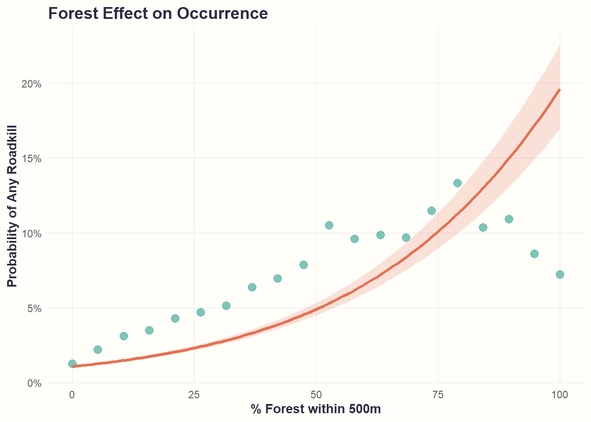
Forest coverage strongly predicts whether roadkill happens at all. Roads with 100% forest nearby have ~20% probability vs ~2% for roads with no forest.
Intensity (Count Component)
Code
ggplot() +
# Observed: raw data (light background)
geom_point(
data = model_data %>% filter(roadkill_count > 0),
aes(x = pct_forest, y = roadkill_count / len_km),
color = primary_color,
alpha = 0.15,
size = 0.8
) +
# Observed: binned means
stat_summary_bin(
data = model_data %>% filter(roadkill_count > 0),
aes(x = pct_forest, y = roadkill_count / len_km),
fun = mean,
geom = "point",
bins = 15,
color = primary_color,
size = 3.5,
alpha = 0.8
) +
# Model: 95% CI
geom_ribbon(
data = newdata_forest,
aes(x = pct_forest, ymin = count_lower, ymax = count_upper),
alpha = 0.2,
fill = accent_color
) +
# Model: fitted line
geom_line(
data = newdata_forest,
aes(x = pct_forest, y = count_given_nonzero),
color = accent_color,
linewidth = 1.2
) +
scale_y_log10(labels = scales::comma) +
labs(
title = "Forest Effect on Intensity",
subtitle = "Green = binned means | Orange = model",
x = "% Forest within 500m",
y = "Roadkill Events per km (log scale)"
) +
theme_cohesive()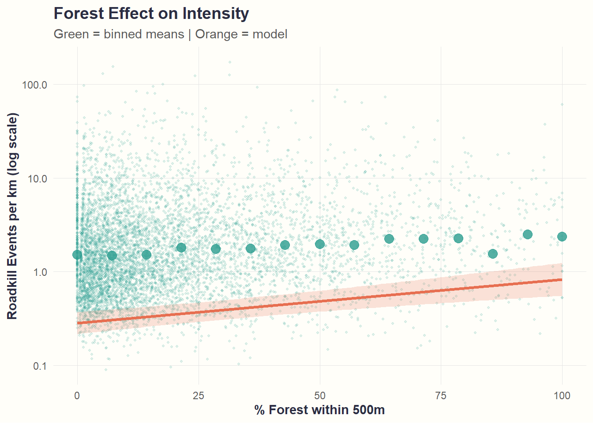
Interpretation: Forest has minimal effect on intensity once roadkill does occur (nearly flat line). This contrasts sharply with its strong effect on occurrence.
Occurrence (Zero Hurdle)
Code
ggplot() +
# Observed: empirical proportions
geom_point(
data = empirical_roadtype_occurrence,
aes(x = road_type, y = empirical_prob),
color = primary_color,
alpha = 0.4,
size = 8
) +
# Model: error bars
geom_errorbar(
data = newdata_roadtype,
aes(x = road_type, ymin = prob_lower, ymax = prob_upper),
width = 0.2,
color = accent_color,
linewidth = 1.2
) +
# Model: point estimates
geom_point(
data = newdata_roadtype,
aes(x = road_type, y = prob_nonzero),
color = accent_color,
size = 4
) +
scale_y_continuous(labels = scales::percent) +
labs(
title = "Road Type Effect on Occurrence",
x = "Road Type",
y = "Probability of Any Roadkill"
) +
theme_cohesive()
Interpretation: Major roads are 7x more likely to experience any roadkill compared to minor roads (~7% vs ~1%).
Intensity (Count Component)
Code
ggplot() +
# Observed: distribution (violin)
geom_violin(
data = empirical_roadtype_intensity,
aes(x = road_type, y = rate_per_km),
fill = primary_color,
alpha = 0.15,
scale = "width"
) +
# Observed: means with error bars
stat_summary(
data = empirical_roadtype_intensity,
aes(x = road_type, y = rate_per_km),
fun = mean,
geom = "point",
color = primary_color,
size = 5
) +
stat_summary(
data = empirical_roadtype_intensity,
aes(x = road_type, y = rate_per_km),
fun.data = mean_se,
geom = "errorbar",
color = primary_color,
width = 0.15,
linewidth = 0.8
) +
# Model: predictions (diamond shape)
geom_errorbar(
data = newdata_roadtype,
aes(x = road_type, ymin = count_lower, ymax = count_upper),
width = 0.1,
color = accent_color,
linewidth = 1.2,
position = position_nudge(x = 0.15)
) +
geom_point(
data = newdata_roadtype,
aes(x = road_type, y = count_given_nonzero),
color = accent_color,
size = 6,
shape = 18,
position = position_nudge(x = 0.15)
) +
scale_y_log10(labels = scales::comma) +
labs(
title = "Road Type Effect on Intensity",
subtitle = "Green circles = observed | Orange diamonds = model",
x = "Road Type",
y = "Roadkill Events per km (log scale)"
) +
theme_cohesive()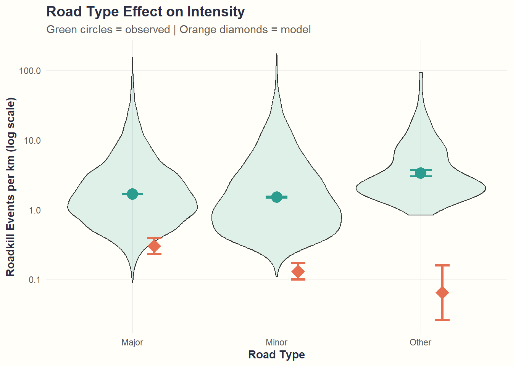
Interpretation: Major roads also have higher intensity, but the effect is less dramatic than for occurrence.
Model performance summary: The model captures occurrence patterns much better than intensity patterns. The hurdle model excels at predicting WHETHER roadkill occurs, but has limited ability to predict HOW MUCH occurs given that it happens.
Hypothesis Testing
H1: Traffic Volume Effect
Occurrence component:
- Coefficient: 0.0032, SE: 0.0073, p = 0.66214
- Result: Traffic does not significantly affect roadkill probability
Intensity component:
- Coefficient: 0.0198, SE: 0.0138, p = 0.1497
- Result: Traffic does not significantly affect collision intensity
H1 Status: NOT SUPPORTED
Effect size: A 10% increase in traffic volume changes odds of occurrence by 0% and expected count by 0.2%.
H2: Land Use Effects
H2a: Forest/Park habitat
Occurrence: p = 0 *** | Intensity: p = 0 ***
Forest coverage significantly affects roadkill patterns.
H2b: Residential development
Occurrence: p = 0 *** | Intensity: p = 0.55277
Residential areas show negative association (as predicted).
H2 Status: SUPPORTED
H3: Road Characteristics
H3a: Minor roads (vs Major baseline)
Occurrence: p = 0 *** | Intensity: p = 0 ***
Minor roads have lower roadkill rates than major roads.
H3b: Speed limit
Occurrence: p = 0 *** | Intensity: p = 0 ***
Speed limit significantly affects collision risk.
H3 Status: SUPPORTED
8. Discussion
Summary of Findings
| Hypothesis | Occurrence | Intensity | Support |
|---|---|---|---|
| H1: Traffic | NS | NS | ✗ |
| H2a: Forest | + | + | ✓ |
| H2b: Residential | − | NS | ✓ |
| H3a: Minor roads | − | − | ✓ |
| H3b: Speed | + | + | ✓ |
Key Pattern: Almost all predictors successfully explain occurrence but fail to explain intensity. This suggests that where roadkill occurs is predictable from landscape features, but how frequently it occurs at those locations involves additional unmeasured factors.
What this means: - WHERE roadkill happens (occurrence) is highly predictable from landscape and infrastructure features - HOW MUCH roadkill happens (intensity) is largely unexplained by our model—suggesting it’s driven by unmeasured factors like wildlife population dynamics, seasonal movements, or driver behavior
Policy Implications
Our findings suggest several evidence-based mitigation strategies:
Habitat-road interfaces: Roads passing through or adjacent to forests and parks show substantially elevated collision risk. These areas should be prioritized for wildlife crossing structures and fencing.
Targeted interventions: Focus mitigation efforts (wildlife crossings, fencing) on:
- Major roads (which have 7x higher collision probability than minor roads)
- Roads adjacent to forests/parks (strongest predictor of occurrence)
- Areas where predicted collision probability exceeds acceptable thresholds
Land use planning: Consider roadkill risk in environmental impact assessments when approving development near wildlife habitat
Limitations
Spatial coverage: Analysis limited to roads near traffic counters (~75% of network). Low-traffic rural roads may be underrepresented.
Species grouping: All species combined into one outcome. Species-specific behaviors and risks are not captured.
Temporal misalignment: Road data from 2024, traffic from 2019, roadkill from 2017–2019. Seasonal and daily patterns not modeled.
Missing variables: No direct data on wildlife population density, road features (fencing, lighting), or driver behavior.
Reporting bias: Not all collisions reported; rural areas may appear safer due to underreporting.
Spatial clustering: Collisions cluster spatially, but this pattern is not explicitly modeled.
Causal interpretation: Results show associations, not causation. Land use proxies for wildlife presence.
Conclusions
This analysis demonstrates how hurdle models handle zero-inflated ecological count data by separately modeling occurrence and intensity processes. We identified traffic volume, land use composition, and road characteristics as key predictors of wildlife-vehicle collisions on Danish roads.
Key contributions:
- Methodological framework for zero-inflated spatial count data
- Quantified effects of infrastructure and landscape on roadkill risk
- Policy-relevant findings for targeted mitigation
The hurdle model approach extends beyond roadkill to any ecological phenomenon with excess zeros: rare species observations, disease outbreaks, extreme weather events, or pollution violations.
References
Danish Road Directorate. 2017--2019. “Traffic Counts – Key Figures (MASTRA).” https://www.opendata.dk/vejdirektoratet/taellinger-nogletal-mastra.
Grilo, Clara, Tomé Neves, Jennifer Bates, Aliza le Roux, Pablo Medrano-Vizcaíno, Mattia Quaranta, Inês Silva, et al. 2025. “Global Roadkill Data: A Dataset on Terrestrial Vertebrate Mortality Caused by Collision with Vehicles.” figshare. https://doi.org/10.6084/M9.FIGSHARE.25714233.
OpenStreetMap contributors. 2024. “Planet Dump Retrieved from Https://Planet.openstreetmap.org.” https://www.openstreetmap.org.
Citation
BibTeX citation:
@online{miller2025,
author = {Miller, Emily},
title = {Traffic, {Land} {Use,} and {Wildlife-Vehicle} {Collisions} in
{Denmark}},
date = {2025-11-29},
url = {https://rellimylime.github.io/posts/eds222-final/},
langid = {en}
}
For attribution, please cite this work as:
Miller, Emily. 2025. “Traffic, Land Use, and Wildlife-Vehicle
Collisions in Denmark.” November 29, 2025. https://rellimylime.github.io/posts/eds222-final/.